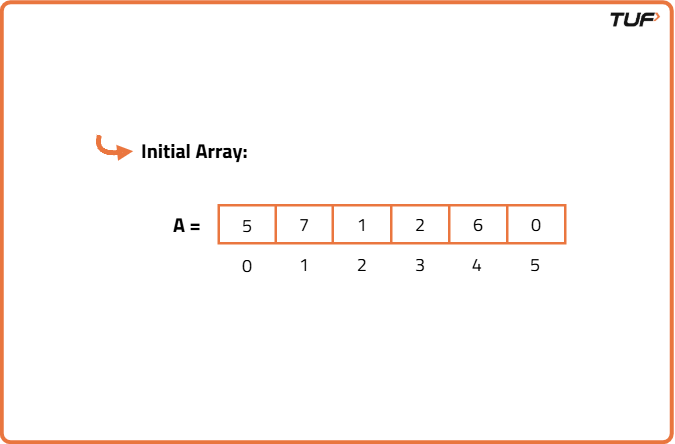
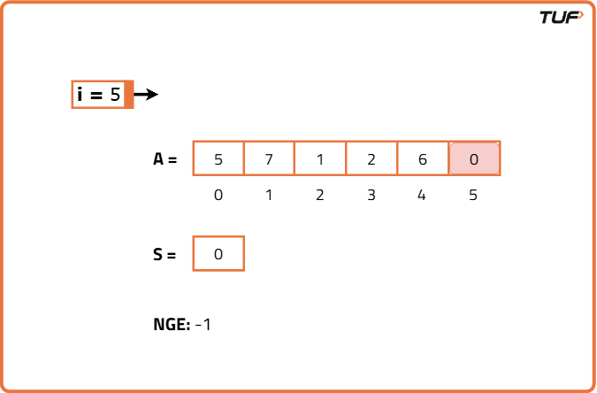
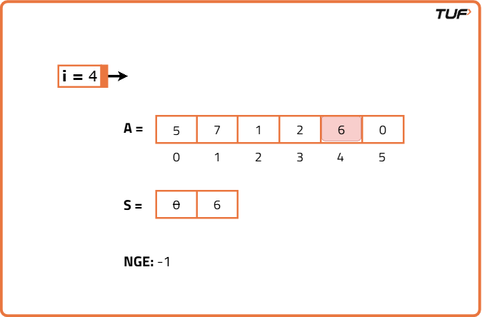
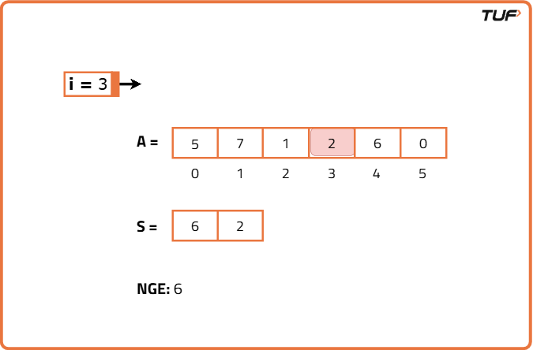
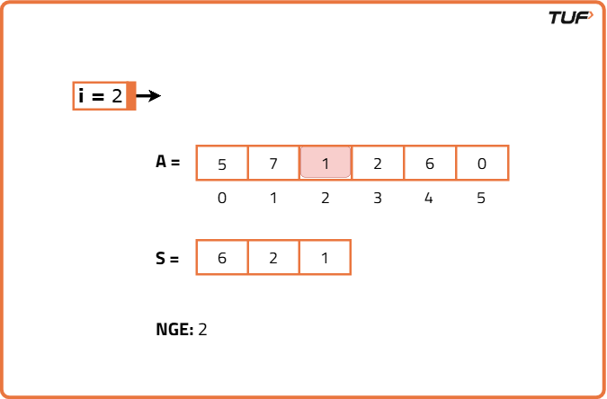
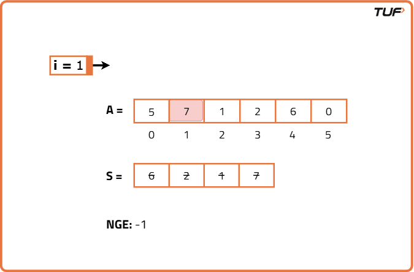
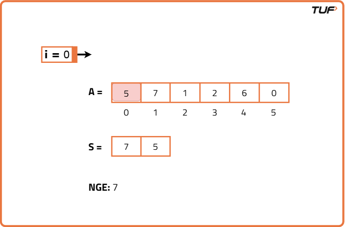

Next Greater Element Using Stack
Problem Statement: Given an integer array A, return the next greater element for every element in A. The next greater element for an element x is the first element greater than x that we come across while traversing the array in a clockwise manner. If it doesn't exist, return -1 for this element.
Examples
Input: arr = [1, 3, 2, 4] Output: [3, 4, 4, -1] Explanation: In the array, the next larger element to 1 is 3, 3 is 4, 2 is 4 and for 4 is -1, since it does not exist. Input : arr = [6, 8, 0, 1, 3] Output: [8, -1, 1, 3, -1] Explanation : In the array, the next larger element to 6 is 8, for 8 there is no larger elements hence it is -1, for 0 it is 1 , for 1 it is 3 and then for 3 there is no larger element on the right and hence -1.
Disclaimer: Here is the practice link to help you assess your knowledge better. It's highly recommend trying to solve it before looking at the solution.
Approach
Algorithm
To find the next greater element for each element in an array, we can use a stack to efficiently track potential candidates. As we traverse the array from right to left, we maintain a stack that always stores elements in decreasing order from top to bottom. This way, when we process an element, we can simply pop off all smaller or equal elements (which can't be the next greater element), and the top of the stack, if it exists, will be the next greater element. If the stack is empty, there is no greater element to the right, so we assign -1.
- Initialize an empty stack and a result array of the same length as input.
- Traverse the array from the last element to the first (right to left).
- For each element, pop elements from the stack while the stack top is less than or equal to the current element.
- If the stack becomes empty, no greater element exists, assign -1 in the result.
- Otherwise, the top of the stack is the next greater element for the current element.
- Push the current element onto the stack for use in future comparisons.







Code
#include <bits/stdc++.h>
using namespace std;
// Solution class to find next greater elements
class Solution {
public:
// Function to find next greater elements
vector<int> nextGreater(vector<int>& nums) {
// Stack to store elements
stack<int> st;
// Result array of same size
int n = nums.size();
vector<int> res(n);
// Traverse from right to left
for (int i = n - 1; i >= 0; i--) {
// Pop all smaller or equal elements
while (!st.empty() && st.top() <= nums[i]) {
st.pop();
}
// If stack is empty, no greater element
if (st.empty()) res[i] = -1;
// Else top of stack is the answer
else res[i] = st.top();
// Push current element
st.push(nums[i]);
}
// Return the result
return res;
}
};
// Main function
int main() {
vector<int> nums = {4, 5, 2, 10};
Solution sol;
vector<int> ans = sol.nextGreater(nums);
for (int x : ans) {
cout << x << " ";
}
cout << endl;
return 0;
}
Complexity Analysis
Time Complexity: O(N), we traverse the entire array once and find next greater element in linear time.Space Complexity: O(N), additional space used for resultant array and stack.